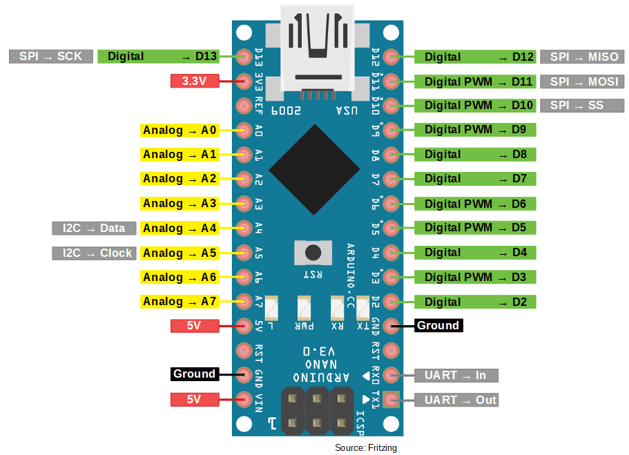
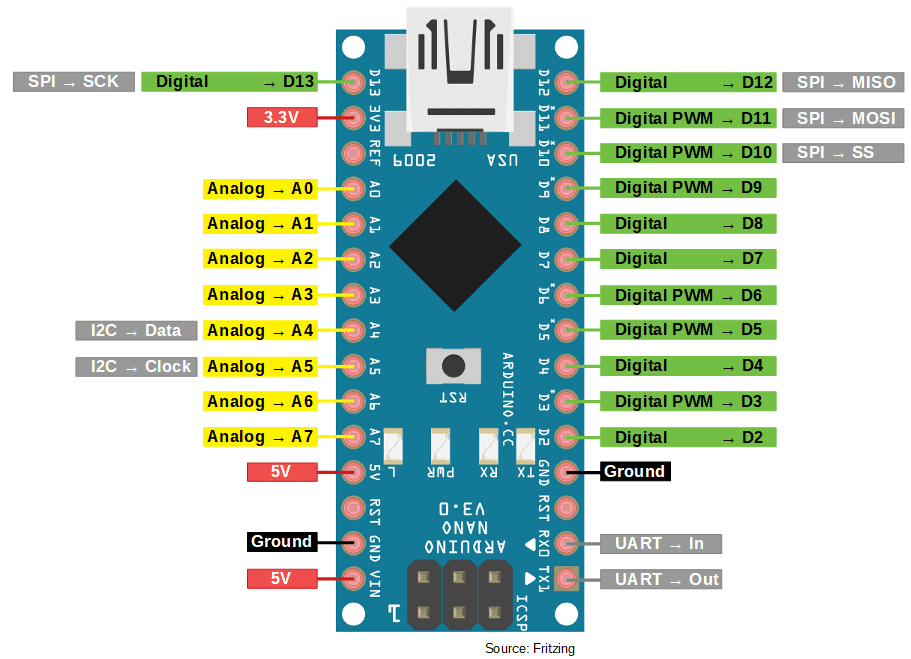

Arduino

Project information
- Category: Arduino
- Author: Mohammad Ateek Samma
- Project date: 01 March, 2020
What Is Arduino.?
Arduino is an open-source electronics platform based on easy-to-use hardware and software. Arduino boards are able to read inputs - light on a sensor, a finger on a button, or a Twitter message - and turn it into an output - activating a motor, turning on an LED, publishing something online. You can tell your board what to do by sending a set of instructions to the microcontroller on the board. To do so you use the Arduino programming language (based on Wiring), and the Arduino Software (IDE), based on Processing.
Over the years Arduino has been the brain of thousands of projects, from everyday objects to complex scientific instruments. A worldwide community of makers - students, hobbyists, artists, programmers, and professionals - has gathered around this open-source platform, their contributions have added up to an incredible amount of accessible knowledge that can be of great help to novices and experts alike.
Why we use Arduino.?
Arduino has been used in thousands of different projects and applications. The Arduino software is easy-to-use for beginners, yet flexible enough for advanced users. It runs on Mac, Windows, and Linux. Teachers and students use it to build low cost scientific instruments, to prove chemistry and physics principles, or to get started with programming and robotics. Designers and architects build interactive prototypes, musicians and artists use it for installations and to experiment with new musical instruments.
Makers, of course, use it to build many of the projects exhibited at the Maker Faire, for example. Arduino is a key tool to learn new things. Anyone - children, hobbyists, artists, programmers - can start tinkering just following the step by step instructions of a kit, or sharing ideas online with other members of the Arduino community.
Types of Arduino :-
We have several types of Arduino but mostly we are using these :-
- Arduino uno
- Arduino nano
- Arduino mega
Arduino uno :-
Arduino Uno is a microcontroller board based on the ATmega328P (datasheet). It has 14 digital input/output pins (of which 6 can be used as PWM outputs), 6 analog inputs, a 16 MHz ceramic resonator (CSTCE16M0V53-R0), a USB connection, a power jack, an ICSP header and a reset button. It contains everything needed to support the microcontroller; simply connect it to a computer with a USB cable or power it with a AC-to-DC adapter or battery to get started.
"Uno" means one in Italian and was chosen to mark the release of Arduino Software (IDE) 1.0. The Uno board and version 1.0 of Arduino Software (IDE) were the reference versions of Arduino, now evolved to newer releases. The Uno board is the first in a series of USB Arduino boards, and the reference model for the Arduino platform; for an extensive list of current, past or outdated boards see the Arduino index of boards

Features of Arduino Uno Board :-
- The operating voltage is 5V.
- The recommended input voltage will range from 7v to 12V.
- The input voltage ranges from 6v to 20V.
- Digital input/output pins are 14.
- Analog i/p pins are 6.
- DC Current for each input/output pin is 40 mA.
- DC Current for 3.3V Pin is 50 mA.
- Flash Memory is 32 KB.
Arduino Nano :-
Arduino Nano The Arduino Nano is a small, complete, and breadboard-friendly board based on the ATmega328 (Arduino Nano 3.x). It lacks only a DC power jack, and works with a Mini-B USB cable instead of a standard one.
The Arduino Nano is very much similar to the Arduino UNO. They use the same Processor (Atmega328p) and hence they both can share the same program. One big difference between both is the size UNO is twice as big as Nano and hence occupies more space on your project. It has 22 input/output pins in total. 14 of these pins are digital pins. Arduino Nano has 8 analogue pins. It has 6 PWM pins among the digital pins.
 

Features of Arduino Nano Board :-
- It has 22 input/output pins in total.
- 14 of these pins are digital pins.
- Arduino Nano has 8 analogue pins.
- It has 6 PWM pins among the digital pins.
- It has a crystal oscillator of 16MHz.
- It's operating voltage varies from 5V to 12V.
Arduino Mega :-
Arduino MegaThe Arduino Mega 2560 is a microcontroller board based on the ATmega2560. It has 54 input/output pins (of which 15 can be used as PWM outputs), 16 analog inputs, 4 UARTs (hardware serial ports), a 16 MHz crystal oscillator, a USB connection, a power jack, an ICSP header, and a reset button.
It contains everything needed to support the microcontroller; simply connect it to a computer with a USB cable or power it with a AC-to-DC adapter or battery to get started. The Mega 2560 board is compatible with most shields designed for the Uno and the former boards Duemilanove or Diecimila.
MEGA is the only Arduino board benefiting from ATMEGA2560 microcontroller with 4-kilobyte EEPROM memory, 8-kilobyte SRAM and 256-kilobyte flash.
Features of Arduino Nano Board :-
- It has 22 input/output pins in total.
- 14 of these pins are digital pins.
- Arduino Nano has 8 analogue pins.
- It has 6 PWM pins among the digital pins.
- It has a crystal oscillator of 16MHz.
- It's operating voltage varies from 5V to 12V.